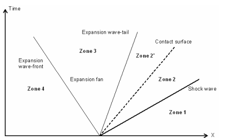

Sod’s shock-tube problem
J.D. Anderson, Modern Compressible Flow (1984)
The Sod gasdynamics problem as a tool for benchmarking face flux construction in the finite volume method
Exact solution of the 1D riemann problem in Newtonian and relativistic hydrodynamics
Sod shock tube calculator
Sod Shock Tube Problem - CFD Simulation
Exact solution for the Sod’s shock-tube problem
Schematic of stationary and moving shock waves.
Stationary normal shock wave
The continuity, momentum, and energy equations of stationary shock waves are, respectively,
\[\begin{split}\begin{array}{c}
\rho_{1} u_{1}=\rho_{2} u_{2}\\
p_{1}+\rho_{1} {u}_{1}^{2}=p_{2}+\rho_{2} {u}_{2}^{2}\\
h_{1}+\cfrac{1}{2}{u}_{1}^{2}=h_{2}+\cfrac{1}{2}{u}_{2}^{2}
\end{array}\end{split}\]
where
\[\begin{split}\begin{array}{l}
u_{1} =\text{ velocity of the gas ahead of the shock wave, relative to the wave }\\
u_{2} =\text{ velocity of gas behind the shock wave, relative to the wave }
\end{array}\end{split}\]
MOVING NORMAL SHOCK WAVES
Initial conditions in a pressure-drivenshock tube.
Flow in a shock tube after the diaphragm is broken.
The moving normal-shock continuity, momentum, and energy equations, are
\[\begin{split}\begin{array}{c}
\rho_{1} W=\rho_{2} (W-u_{p})\\
p_{1}+\rho_{1} W^{2}=p_{2}+\rho_{2} (W-u_{p})^{2}\\
h_{1}+\cfrac{1}{2}W^{2}=h_{2}+\cfrac{1}{2}(W-u_{p})^{2}
\end{array}\end{split}\]
Let us rearrange thcse equations into a more convenient form.
\[\begin{split}W-u_{p}=W\cfrac{\rho_{1}}{\rho_{2}}\\\end{split}\]
\[\begin{split}\begin{array}{c}
p_{1}+\rho_{1} W^{2}=p_{2}+\rho_{2} (W-u_{p})^{2}=p_{2}+\rho_{2} (W\cfrac{\rho_{1}}{\rho_{2}})^{2}\\
p_{1}+\rho_{1} W^{2}=p_{2}+ \rho_{1}W^{2} (\cfrac{\rho_{1}}{\rho_{2}})\\
\end{array}\end{split}\]
and rearranging,
\[p_{2}-p_{1}=\rho_{1} W^{2}(1-\cfrac{\rho_{1}}{\rho_{2}})\]
\[\begin{split}\begin{array}{l}
W^{2}=\cfrac{p_{2}-p_{1}}{\rho_{1}(1-\cfrac{\rho_{1}}{\rho_{2}})}\\
W^{2}=\cfrac{(p_{2}-p_{1})\rho_{2}}{\rho_{1}(\rho_{2}-\rho_{1})}
=\cfrac{p_{2}-p_{1}}{\rho_{2}-\rho_{1}}\left(\cfrac{\rho_{2}}{\rho_{1}}\right)\\
W^{2}=\cfrac{p_{2}-p_{1}}{\rho_{2}-\rho_{1}}\left(\cfrac{\rho_{2}}{\rho_{1}}\right)\\
\end{array}\end{split}\]
\[\begin{split}\begin{array}{c}
W= (W-u_{p})\left(\cfrac{\rho_{2}}{\rho_{1}}\right)\\
W^{2}=(W-u_{p})^{2}\left(\cfrac{\rho_{2}}{\rho_{1}}\right)^{2}\\
W^{2}=\cfrac{p_{2}-p_{1}}{\rho_{2}-\rho_{1}}\left(\cfrac{\rho_{2}}{\rho_{1}}\right)\\
(W-u_{p})^{2}\left(\cfrac{\rho_{2}}{\rho_{1}}\right)=\cfrac{p_{2}-p_{1}}{\rho_{2}-\rho_{1}}
\end{array}\end{split}\]
\[(W-u_{p})^{2}=\cfrac{p_{2}-p_{1}}{\rho_{2}-\rho_{1}}\left(\cfrac{\rho_{1}}{\rho_{2}}\right)\]
\[h=e+p/\rho\]
\[\begin{split}\begin{align}
h_{1}+\cfrac{1}{2}W^{2} & = h_{2}+\cfrac{1}{2}(W-u_{p})^{2}\\
&\Rightarrow e_{1}+\cfrac{p_{1}}{\rho_{1}}
+\cfrac{1}{2}\left[\cfrac{p_{2}-p_{1}}{\rho_{2}-\rho_{1}}\left(\cfrac{\rho_{2}}{\rho_{1}}\right)\right]\\ & = e_{2}+\cfrac{p_{2}}{\rho_{2}}
+\cfrac{1}{2}\left[\cfrac{p_{2}-p_{1}}{\rho_{2}-\rho_{1}}\left(\cfrac{\rho_{1}}{\rho_{2}}\right)\right]
\end{align}\end{split}\]
The above equation algebraically simplifies to
\[\begin{align}
e_{2}-e_{1}=
\cfrac{p_{1}}{\rho_{1}}-\cfrac{p_{2}}{\rho_{2}}
+\cfrac{1}{2}\left[\cfrac{p_{2}-p_{1}}{\rho_{2}-\rho_{1}}\left(\cfrac{\rho_{2}}{\rho_{1}}\right)\right]
-\cfrac{1}{2}\left[\cfrac{p_{2}-p_{1}}{\rho_{2}-\rho_{1}}\left(\cfrac{\rho_{1}}{\rho_{2}}\right)\right]
\end{align}\]
\[\begin{split}\begin{align}
e_{2}-e_{1}=
\cfrac{p_{1}}{\rho_{1}}-\cfrac{p_{2}}{\rho_{2}}
+\cfrac{1}{2}\left[\cfrac{p_{2}-p_{1}}{\rho_{2}-\rho_{1}}\left(\cfrac{\rho_{2}}{\rho_{1}}-\cfrac{\rho_{1}}{\rho_{2}}\right)\right]\\
e_{2}-e_{1}=
\cfrac{p_{1}}{\rho_{1}}-\cfrac{p_{2}}{\rho_{2}}
+\cfrac{1}{2}\left[\cfrac{p_{2}-p_{1}}{\rho_{2}-\rho_{1}}\left(\cfrac{(\rho_{2})^{2}-(\rho_{1})^{2}}{\rho_{1}\rho_{2}}\right)\right]\\
e_{2}-e_{1}=
\cfrac{p_{1}}{\rho_{1}}-\cfrac{p_{2}}{\rho_{2}}
+\cfrac{1}{2}\left[\cfrac{(p_{2}-p_{1})(\rho_{2}+\rho_{1})}{\rho_{1}\rho_{2}}\right]\\
\end{align}\end{split}\]
\[\begin{split}\begin{align}
e_{2}-e_{1}=
\cfrac{p_{1}}{\rho_{1}}-\cfrac{p_{2}}{\rho_{2}}
+\cfrac{1}{2}\left[{(p_{2}-p_{1})\left(\cfrac{1}{\rho_{1}}+\cfrac{1}{\rho_{2}}\right)}\right]\\
e_{2}-e_{1}=
p_{1}\left(\cfrac{1}{\rho_{1}}-\cfrac{1}{2}\left(\cfrac{1}{\rho_{1}}+\cfrac{1}{\rho_{2}}\right)\right)
+p_{2}\left(-\cfrac{1}{\rho_{2}}+\cfrac{1}{2}\left(\cfrac{1}{\rho_{1}}+\cfrac{1}{\rho_{2}}\right)\right)\\
e_{2}-e_{1}=
\cfrac{1}{2}p_{1}\left(\cfrac{1}{\rho_{1}}-\cfrac{1}{\rho_{2}}\right)
-\cfrac{1}{2}p_{2}\left(\cfrac{1}{\rho_{2}}-\cfrac{1}{\rho_{1}}\right)\\
e_{2}-e_{1}=
\cfrac{1}{2}(p_{1}+p_{2})\left(\cfrac{1}{\rho_{1}}-\cfrac{1}{\rho_{2}}\right)
\end{align}\end{split}\]
Hugoniot equation
\[e_{2}-e_{1}=
\cfrac{1}{2}(p_{1}+p_{2})\left(\cfrac{1}{\rho_{1}}-\cfrac{1}{\rho_{2}}\right)\]
or
\[e_{2}-e_{1}=
\cfrac{1}{2}(p_{1}+p_{2})\left(\nu_{1}-\nu_{2}\right)\]
where \(\nu\) is specific volume, It is the reciprocal of density \(\rho\) .
Hugoniot equation, and is identically the same form for a stationary shock. In hindsight, this is to be expected; the Hugoniot
equation relates changes of thermodynamic variables across a normal shock wave,
and these are physically independent of whether or not the shock is moving.
Let us specialize to the case of a calorically perfect gas. In this case, \(e=c_{v}T\) and \(\nu=RT/p\) , hence
\[\begin{split}\begin{array}{l}
c_{v}=\cfrac{1}{\gamma-1}R\\
e=c_{v}T=\cfrac{1}{\gamma-1}RT\\
\end{array}\end{split}\]
\[\begin{split}\begin{array}{l}
\cfrac{1}{\gamma-1}R(T_{2}-T_{1})=
\cfrac{1}{2}(p_{1}+p_{2})\left(\cfrac{RT_{1}}{p_{1}}-\cfrac{RT_{2}}{p_{2}}\right)\\
\cfrac{1}{\gamma-1}R(\cfrac{T_{2}}{T_{1}}-1)=
\cfrac{1}{2}(p_{1}+p_{2})\left(\cfrac{R}{p_{1}}-\cfrac{R}{p_{2}}\cfrac{T_{2}}{T_{1}}\right)\\
\cfrac{1}{\gamma-1}(\cfrac{T_{2}}{T_{1}}-1)=
\cfrac{1}{2}(p_{1}+p_{2})\left(\cfrac{1}{p_{1}}-\cfrac{1}{p_{2}}\cfrac{T_{2}}{T_{1}}\right)\\
(\cfrac{T_{2}}{T_{1}}-1)=
\cfrac{1}{2}({\gamma-1})(p_{1}+p_{2})\left(\cfrac{1}{p_{1}}-\cfrac{1}{p_{2}}\cfrac{T_{2}}{T_{1}}\right)\\
\cfrac{T_{2}}{T_{1}}=
1+\cfrac{1}{2}({\gamma-1})(p_{1}+p_{2})\left(\cfrac{1}{p_{1}}-\cfrac{1}{p_{2}}\cfrac{T_{2}}{T_{1}}\right)\\
\cfrac{T_{2}}{T_{1}}=
1+\cfrac{1}{2}({\gamma-1})(p_{1}+p_{2})\left(\cfrac{1}{p_{1}}\right)
-\cfrac{1}{2}({\gamma-1})(p_{1}+p_{2})\left(\cfrac{1}{p_{2}}\cfrac{T_{2}}{T_{1}}\right)
\end{array}\end{split}\]
\[\begin{split}\begin{array}{l}
\cfrac{T_{2}}{T_{1}}\left(1+\cfrac{1}{2}({\gamma-1})\left(1+\cfrac{p_{1}}{p_{2}}\right)\right)=
1+\cfrac{1}{2}({\gamma-1})\left(1+\cfrac{p_{2}}{p_{1}}\right)\\
\cfrac{T_{2}}{T_{1}}=
\cfrac{\left(1+\cfrac{1}{2}({\gamma-1})\left(1+\cfrac{p_{2}}{p_{1}}\right)\right)}
{\left(1+\cfrac{1}{2}({\gamma-1})\left(1+\cfrac{p_{1}}{p_{2}}\right)\right)}\\
\cfrac{T_{2}}{T_{1}}=
\cfrac{\left(1+\cfrac{1}{2}({\gamma-1})+\cfrac{1}{2}({\gamma-1})\left(\cfrac{p_{2}}{p_{1}}\right)\right)}
{\left(1+\cfrac{1}{2}({\gamma-1})+\cfrac{1}{2}({\gamma-1})\left(\cfrac{p_{1}}{p_{2}}\right)\right)}\\
\cfrac{T_{2}}{T_{1}}=
\cfrac{\left(\cfrac{1}{2}({\gamma+1})+\cfrac{1}{2}({\gamma-1})\left(\cfrac{p_{2}}{p_{1}}\right)\right)}
{\left(\cfrac{1}{2}({\gamma+1})+\cfrac{1}{2}({\gamma-1})\left(\cfrac{p_{1}}{p_{2}}\right)\right)}\\
\cfrac{T_{2}}{T_{1}}=
\cfrac{\left(({\gamma+1})+({\gamma-1})\left(\cfrac{p_{2}}{p_{1}}\right)\right)}
{\left(({\gamma+1})+({\gamma-1})\left(\cfrac{p_{1}}{p_{2}}\right)\right)}\\
\end{array}\end{split}\]
\[\begin{split}\begin{array}{c}
\cfrac{T_{2}}{T_{1}}=
\cfrac{\left(\cfrac{\gamma+1}{\gamma-1}+\left(\cfrac{p_{2}}{p_{1}}\right)\right)}
{\left(\cfrac{\gamma+1}{\gamma-1}+\left(\cfrac{p_{1}}{p_{2}}\right)\right)}\\
\cfrac{T_{2}}{T_{1}}=
\cfrac{\left(\cfrac{p_{2}}{p_{1}}\right)\left(\cfrac{\gamma+1}{\gamma-1}+\left(\cfrac{p_{2}}{p_{1}}\right)\right)}
{\left(\cfrac{p_{2}}{p_{1}}\right)\left(\cfrac{\gamma+1}{\gamma-1}+\left(\cfrac{p_{1}}{p_{2}}\right)\right)}\\
\cfrac{T_{2}}{T_{1}}=
\cfrac{\left(\cfrac{p_{2}}{p_{1}}\right)\left(\cfrac{\gamma+1}{\gamma-1}+\left(\cfrac{p_{2}}{p_{1}}\right)\right)}
{\left(\cfrac{\gamma+1}{\gamma-1}\left(\cfrac{p_{2}}{p_{1}}\right)+1\right)}\\
\cfrac{T_{2}}{T_{1}}=\cfrac{p_{2}}{p_{1}}
\left(\cfrac{\cfrac{\gamma+1}{\gamma-1}+\cfrac{p_{2}}{p_{1}}}
{1+\cfrac{\gamma+1}{\gamma-1}\cfrac{p_{2}}{p_{1}}}\right)\\
\end{array}\end{split}\]
Similarly,
\[\begin{split}\begin{array}{l}
p=\rho RT\Rightarrow T=\cfrac{p}{\rho R}\\
\cfrac{T_{2}}{T_{1}}=\cfrac{p_{2}}{p_{1}}
\left(\cfrac{\cfrac{\gamma+1}{\gamma-1}+\cfrac{p_{2}}{p_{1}}}
{1+\cfrac{\gamma+1}{\gamma-1}\cfrac{p_{2}}{p_{1}}}\right)\\
\cfrac{T_{2}}{T_{1}}=\cfrac{\rho_{2} RT_{2}}{\rho_{1} RT_{1}}
\left(\cfrac{\cfrac{\gamma+1}{\gamma-1}+\cfrac{p_{2}}{p_{1}}}
{1+\cfrac{\gamma+1}{\gamma-1}\cfrac{p_{2}}{p_{1}}}\right)\\
1=\cfrac{\rho_{2} }{\rho_{1}}
\left(\cfrac{\cfrac{\gamma+1}{\gamma-1}+\cfrac{p_{2}}{p_{1}}}
{1+\cfrac{\gamma+1}{\gamma-1}\cfrac{p_{2}}{p_{1}}}\right)\\
\end{array}\end{split}\]
\[\begin{split}\begin{array}{l}
\cfrac{{1+\cfrac{\gamma+1}{\gamma-1}\cfrac{p_{2}}{p_{1}}}}{\cfrac{\gamma+1}{\gamma-1}+\cfrac{p_{2}}{p_{1}}}=\cfrac{\rho_{2} }{\rho_{1}}\\
\cfrac{\rho_{2} }{\rho_{1}}=\cfrac{{1+\cfrac{\gamma+1}{\gamma-1}\cfrac{p_{2}}{p_{1}}}}{\cfrac{\gamma+1}{\gamma-1}+\cfrac{p_{2}}{p_{1}}}\\
\end{array}\end{split}\]
Define the moving shock Mach number as
\[M_{s}=\cfrac{W}{a_{1}}\]
INCIDENT AND REFLECTED EXPANSION WAVES
The \(C_{+}\) and \(C_{-}\) characteristics for a centered expansion wave(on an xt diagram).
\[\cfrac{a}{a_{4}}=1-\cfrac{\gamma-1}{2}\left(\cfrac{u}{a_{4}} \right)\]
To obtain the variation of properties in a centered expansion wave as a funclion
of x and t. The equation of any C characteristic is
\[\cfrac{dx}{dt}=u-a\]
or, because the characteristic ib a straight line through the origin
\[x=(u-a)t\]
\[\begin{split}\begin{array}{l}
\cfrac{a}{a_{4}}=1-\cfrac{\gamma-1}{2}\left(\cfrac{u}{a_{4}} \right)\\
a=a_{4}-\cfrac{\gamma-1}{2}u\\
u-a=u-a_{4}+\cfrac{\gamma-1}{2}u\\
u-a=-a_{4}+\cfrac{\gamma+1}{2}u\\
\end{array}\end{split}\]
\[\begin{split}\begin{array}{l}
x=(u-a)t\\
x=(-a_{4}+\cfrac{\gamma+1}{2}u)t\\
\cfrac{x}{t}=(-a_{4}+\cfrac{\gamma+1}{2}u)\\
\cfrac{x}{t}+a_{4}=\cfrac{\gamma+1}{2}u\\
\cfrac{2}{\gamma+1}\left( {\cfrac{x}{t}+a_{4}}\right)=u\\
u=\cfrac{2}{\gamma+1}\left( {\cfrac{x}{t}+a_{4}}\right)\\
\end{array}\end{split}\]
SHOCK TUBE RELATIONS
Flow in a shock tube after the diaphragm is broken.
Schematic shock tube problem with pressure distribution for pre- and post-diaphragm removal.

Diagram of the shock, expansion waves and contact surface.
\[\begin{split}\begin{array}{l}
p_{3}=p_{2}\\
u_{3}=u_{2}=u_{p}
\end{array}\end{split}\]
\[u_{p}=u_{2}=\cfrac{a_{1}}{\gamma_{1}}\left(\cfrac{p_{2}}{p_{1}}-1\right)\left(\cfrac{\cfrac{2\gamma_{1}}{\gamma_{1}+1}}{\cfrac{p_{2}}{p_{1}}+\cfrac{\gamma_{1}-1}{\gamma_{1}+1}}\right)^{1/2}\]
between the head and tail of the expansion wave
\[\cfrac{p_{3}}{p_{4}}=\left[1-\cfrac{\gamma_{4}}{2}\left(\cfrac{u_{3}}{u_{4}}\right)\right]^{\cfrac{2\gamma_{4}}{\gamma_{4}-1}}\]
\(\cfrac{p2}{p1}\) :
\[\cfrac{p_{4}}{p_{1}}=\cfrac{p_{2}}{p_{1}}
\left\{1-\cfrac{(\gamma_{4}-1)\left(\cfrac{a_{1}}{a_{4}}\right)\left(\cfrac{p_{2}}{p_{1}}-1\right)}
{\sqrt{2\gamma_{1}\left[2\gamma_{1}+(\gamma_{1}+1)\left(\cfrac{p_{2}}{p_{1}}-1\right)\right]}}\right\}
^{\cfrac{-2\gamma_{4}}{\gamma_{4}-1}}\]
The analysis of the flow of a calorically perfect gas in a shock tube is now
straightforward. For a given diaphragm pressure ratio \(p4/p1\) :
Calculate \(p2/p1\) . This defines the strength of the incident shock wave.
\[\cfrac{p_{4}}{p_{1}}=\cfrac{p_{2}}{p_{1}}
\left\{1-\cfrac{(\gamma_{4}-1)\left(\cfrac{a_{1}}{a_{4}}\right)\left(\cfrac{p_{2}}{p_{1}}-1\right)}
{\sqrt{2\gamma_{1}\left[2\gamma_{1}+(\gamma_{1}+1)\left(\cfrac{p_{2}}{p_{1}}-1\right)\right]}}\right\}
^{\cfrac{-2\gamma_{4}}{\gamma_{4}-1}}\]
Calculate all other incident shock properties:
\[\begin{split}\cfrac{T_{2}}{T_{1}}=\cfrac{p_{2}}{p_{1}}
\left(\cfrac{\cfrac{\gamma+1}{\gamma-1}+\cfrac{p_{2}}{p_{1}}}
{1+\cfrac{\gamma+1}{\gamma-1}\cfrac{p_{2}}{p_{1}}}\right)\\\end{split}\]
\[\begin{split}\cfrac{\rho_{2} }{\rho_{1}}=\cfrac{{1+\cfrac{\gamma+1}{\gamma-1}\cfrac{p_{2}}{p_{1}}}}{\cfrac{\gamma+1}{\gamma-1}+\cfrac{p_{2}}{p_{1}}}\\\end{split}\]
\[W=a_{1}\sqrt{\cfrac{\gamma+1}{2\gamma}\left(\cfrac{p_{2}}{p_{1}}-1\right)+1}\]
\[u_{p}=u_{2}=\cfrac{a_{1}}{\gamma_{1}}\left(\cfrac{p_{2}}{p_{1}}-1\right)\left(\cfrac{\cfrac{2\gamma_{1}}{\gamma_{1}+1}}{\cfrac{p_{2}}{p_{1}}+\cfrac{\gamma_{1}-1}{\gamma_{1}+1}}\right)^{1/2}\]
\[\begin{split}\begin{array}{l}
p_{3}=p_{2}\\
u_{3}=u_{2}=u_{p}
\end{array}\end{split}\]
Calculate \(p_{3}/p_{4}=(p_{3}/p_{1})/(p_{4}/p_{1})=(p_{2}/p_{1})/(p_{4}/p_{1})\) . This defines the strength of the incident expansion wave.
All other thermodynamic properties immediately behind the expansion wave can be found from the isentropic relations
\[\cfrac{p_{3}}{p_{4}}=\left(\cfrac{\rho_{3}}{\rho_{4}}\right)^{\gamma}=\left(\cfrac{T_{3}}{T_{4}}\right)^{\cfrac{\gamma}{\gamma -1}}\]
Calculate the local properties inside the expansion wave:
\[\cfrac{a}{a_{4}}=1-\cfrac{\gamma-1}{2}\left(\cfrac{u}{a_{4}} \right)\]
\[u=\cfrac{2}{\gamma+1}\left(a_{4}+\cfrac{x}{t} \right )\]
Equation holds for the region between the head and tail of the centered expansion wave
i.e., \(-a_{4}\le \cfrac{x}{t}\le u_{3}-a_{3}\)
\[\begin{split}\begin{array}{l}
x_{\text{head}} = x_{\text{diaphragm}}+(u_{4}-a_{4})\times t\\
x_{\text{tail}} = x_{\text{diaphragm}}+(u_{3}-a_{3})\times t\\
x_{\text{head}}-x_{\text{tail}}=\left\{(u_{4}-a_{4})-(u_{3}-a_{3})\right\}\times t\\
\end{array}\end{split}\]
\[\begin{split}\begin{array}{l}
u=\cfrac{2}{\gamma+1}\left(a_{4}+\cfrac{x}{t} \right )\\
u=\cfrac{2a_{4}}{\gamma+1}+\cfrac{2}{\gamma+1}\cfrac{x}{t}\\
u_{\text{head}}=\cfrac{2a_{4}}{\gamma+1}+\cfrac{2}{\gamma+1}\cfrac{x_{\text{head}}}{t}\\
u-u_{\text{head}}=\cfrac{2}{\gamma+1}\cfrac{x-x_{\text{head}}}{t}\\
u-u_{\text{head}}\propto x-x_{\text{head}}\\
\end{array}\end{split}\]
\[\begin{split}\begin{array}{l}
u_{\text{head}}=\cfrac{2a_{4}}{\gamma+1}+\cfrac{2}{\gamma+1}\cfrac{x_{\text{head}}}{t}\\
u_{\text{tail}}=\cfrac{2a_{4}}{\gamma+1}+\cfrac{2}{\gamma+1}\cfrac{x_{\text{tail}}}{t}\\
u_{\text{tail}}-u_{\text{head}}=\cfrac{2}{\gamma+1}\cfrac{x_{\text{tail}}-x_{\text{head}}}{t}\\
u-u_{\text{head}}=\cfrac{2}{\gamma+1}\cfrac{x-x_{\text{head}}}{t}\\
\cfrac{u-u_{\text{head}}}{u_{\text{tail}}-u_{\text{head}}} =\cfrac{x-x_{\text{head}}}{x_{\text{tail}}-x_{\text{head}}} \\
\end{array}\end{split}\]
Code implementation details
Set initial states (non-dimensional).
\[\begin{split}\begin{array}{l}
p_{4} = 1.0;\\
r_{4} = 1.0;\\
u_{4} = 0.0;\\
\\
p_{1} = 0.1;\\
r_{1} = 0.125;\\
u_{1} = 0.0;\\
\end{array}\end{split}\]
Set dimensions of shocktube.
\[\begin{split}\begin{array}{c}
x_{l} = 0.0;\\
x_{r} = 1.0;\\
x_{d} = 0.5;\\
\end{array}\end{split}\]
Calc acoustic velocities.
\[\begin{split}\begin{array}{c}
a_{1} = \sqrt{ \gamma \cfrac{p_{1}}{\rho_{1}}}\\
a_{4} = \sqrt{ \gamma \cfrac{p_{4}}{\rho_{4}}}\\
\end{array}\end{split}\]
Use a Newton-secant iteration to compute p2p1.
\[\cfrac{p_{4}}{p_{1}}=\cfrac{p_{2}}{p_{1}}
\left\{1-\cfrac{(\gamma_{4}-1)\left(\cfrac{a_{1}}{a_{4}}\right)\left(\cfrac{p_{2}}{p_{1}}-1\right)}
{\sqrt{2\gamma_{1}\left[2\gamma_{1}+(\gamma_{1}+1)\left(\cfrac{p_{2}}{p_{1}}-1\right)\right]}}\right\}
^{\cfrac{-2\gamma_{4}}{\gamma_{4}-1}}\]
Calculate all other incident shock properties:
\[\begin{split}\cfrac{T_{2}}{T_{1}}=\cfrac{p_{2}}{p_{1}}
\left(\cfrac{\cfrac{\gamma+1}{\gamma-1}+\cfrac{p_{2}}{p_{1}}}
{1+\cfrac{\gamma+1}{\gamma-1}\cfrac{p_{2}}{p_{1}}}\right)\\\end{split}\]
\[\begin{split}\cfrac{\rho_{2} }{\rho_{1}}=\cfrac{{1+\cfrac{\gamma+1}{\gamma-1}\cfrac{p_{2}}{p_{1}}}}{\cfrac{\gamma+1}{\gamma-1}+\cfrac{p_{2}}{p_{1}}}\\\end{split}\]
Calculate shock-wave speed.
\[W=a_{1}\sqrt{\cfrac{\gamma+1}{2\gamma}\left(\cfrac{p_{2}}{p_{1}}-1\right)+1}\]
Calculate Shock location.
\[\begin{split}x_{\text{shock}} = x_{\text{diaphragm}}+W\times t;\\\end{split}\]
Calculate State 2.
\[\begin{split}\begin{array}{l}
p_{2}=\cfrac{p_{2}}{p_{1}}p_{1}\\
{\rho}_{2}=\cfrac{{\rho}_{2}}{{\rho}_{1}}{\rho}_{1}\\
a_{2}=\sqrt{\gamma \cfrac{p_{2}}{\rho_{2}} }
\end{array}\end{split}\]
Calculate State 3.
\[\begin{split}p_{3} = p_{2}\\\end{split}\]
Isentropic between 3 and 4.
\[\begin{split}\begin{array}{l}
\cfrac{\rho_{3}}{\rho_{4}}=\left(\cfrac{p_{3}}{p_{4}}\right)^{\cfrac{1}{\gamma}}\\
a_{3}=\sqrt{\gamma \cfrac{p_{3}}{\rho_{3}} }
\end{array}\end{split}\]
Calculate the speed of contact discontinuity.
\[\begin{split}\begin{array}{l}
u_{p}=\cfrac{a_{1}}{\gamma_{1}}\left(\cfrac{p_{2}}{p_{1}}-1\right)\left(\cfrac{\cfrac{2\gamma_{1}}{\gamma_{1}+1}}{\cfrac{p_{2}}{p_{1}}+\cfrac{\gamma_{1}-1}{\gamma_{1}+1}}\right)^{\cfrac{1}{2}}\\
u_{2}=u_{p}\\
u_{3}=u_{p}\\
\end{array}\end{split}\]
Calculate Mach numbers.
\[\begin{split}\begin{array}{l}
M_{1}=\cfrac{u_{1}}{a_{1}}\\
M_{2}=\cfrac{u_{2}}{a_{2}}\\
M_{3}=\cfrac{u_{3}}{a_{3}}\\
M_{4}=\cfrac{u_{4}}{a_{4}}\\
\end{array}\end{split}\]
Calculate the location of contact discontinuity.
\[\begin{split}x_{\text{contact discontinuity}}=x_{\text{diaphragm}}+u_{p}\times t\\\end{split}\]
Calculate the location of expansion region.
\[\begin{split}\begin{align}
x_{\text{expansion head}} & = x_{\text{diaphragm}}+(u_{4}-a_{4})\times t\\
x_{\text{expansion tail}} & = x_{\text{diaphragm}}+(u_{3}-a_{3})\times t\\
\end{align}\end{split}\]
Calculate all other expansion wave properties:
\[x_{\text{expansion}}=x_{\text{expansion head}}+dx_{\text{expansion}}*\cfrac{i}{n_{\text{ expansion points}}}\]
Let
\[x=x_{\text{expansion}}\]
then
\[\begin{split}\begin{array}{l}
u(x)=u_{\text{head}}+(u_{\text{tail}}-u_{\text{head}})\cfrac{x-x_{\text{head}}}{x_{\text{tail}}-x_{\text{head}}} \\
u(x)=u_{4}+(u_{3}-u_{4})\cfrac{x-x_{\text{head}}}{x_{\text{tail}}-x_{\text{head}}} \\
u_{4}=0\\
u(x)=(u_{3})\cfrac{x-x_{\text{head}}}{x_{\text{tail}}-x_{\text{head}}} \\
\end{array}\end{split}\]
\[\begin{split}\begin{array}{l}
\cfrac{p(x)}{p_{4}}=\left[1-\cfrac{\gamma-1}{2}\left(\cfrac{u(x)}{a_{4}} \right)\right]^{\cfrac{2\gamma }{\gamma-1} }\\
\cfrac{\rho(x)}{\rho_{4}}=\left[1-\cfrac{\gamma-1}{2}\left(\cfrac{u(x)}{a_{4}} \right)\right]^{\cfrac{2 }{\gamma-1} }\\
M(x)=\cfrac{u(x)}{\sqrt{\gamma \cfrac{p(x)}{\rho (x)} } }
\end{array}\end{split}\]
Newton-secant method
Use a Newton-secant iteration to compute p2p1.
\[\cfrac{p_{4}}{p_{1}}=\cfrac{p_{2}}{p_{1}}
\left\{1-\cfrac{(\gamma_{4}-1)\left(\cfrac{a_{1}}{a_{4}}\right)\left(\cfrac{p_{2}}{p_{1}}-1\right)}
{\sqrt{2\gamma_{1}\left[2\gamma_{1}+(\gamma_{1}+1)\left(\cfrac{p_{2}}{p_{1}}-1\right)\right]}}\right\}
^{\cfrac{-2\gamma_{4}}{\gamma_{4}-1}}\]
Let \(x=p_{2}/p_{1}\)
Initialize x for starting guess
\[\begin{split}\begin{array}{l}
x=0.9\cfrac{p_{4}}{p_{1}}\\
\end{array}\end{split}\]
\[f=\cfrac{p_{4}}{p_{1}}-x\times\left\{1-\cfrac{(\gamma-1)(\cfrac{a_{1}}{a_{4}} )(x-1)}{\sqrt{2\gamma [2\gamma+(\gamma +1)(x-1)]}} \right \}
^{-\cfrac{2\gamma }{\gamma -1} }\]
Perturb \(x\)
\[\hat{x}=0.95x\]
Begin iteration
\[\begin{split}\begin{array}{l}
\text{iter} = 0\\
\text{itmax} = 20\\
\end{array}\end{split}\]
\[\begin{split}\begin{align}
\text{while True:}\\
iter & = iter + 1\\
\hat{f}&=\cfrac{p_{4}}{p_{1}}-\hat{x}\times\left\{1-\cfrac{(\gamma-1)(\cfrac{a_{1}}{a_{4}} )(\hat{x}-1)}{\sqrt{2\gamma [2\gamma+(\gamma +1)(\hat{x}-1)]}} \right \}
^{-\cfrac{2\gamma }{\gamma -1} }\\
\text{if}&\text{ abs}( \hat{f} ) \le \text{tol or iter} \ge \text{itmax:}\\
\quad &\quad\quad\text{ break}\\
\widetilde{x}&= \hat{x}- \hat{f} * ( \hat{x}- x) / ( \hat{f} - f);\\
x&= \hat{x};\\
f&= \hat{f};\\
\hat{x}&= \widetilde{x};\\
\end{align}\end{split}\]
{kind=link}
{kind=link}
{kind=link}
{kind=link}
{kind=link}
{kind=link}